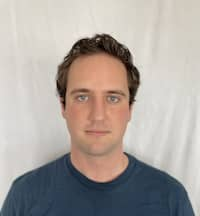

Garrett Baker | WDD 130
Hello! My name is Garrett Baker and I am from Gilbert, Arizona. I am 27 years old and enjoy reading and playing board games indoors and swimming and hiking outdoors. I have lived in a lot of places as I grew up. My Dad served in the Army as a dentist to finish his education and residency progrom so I have had the pleasure of living in many different places. I was born in Tualitin, Oregon and lived there for 2 years. After Oregon we moved to Bamburg, Germany for 3 years and got to experience life in Europe. Following Germany we lived in Atlanta, Georgia and Waynesville Missouri for 2 years each until my Dad got out of the Army and was able to start up his own bussiness with his friends here in Arizona. After living in Arizona for the rest of my childhood I had the opportuntiy to serve a mission for the church in the Reno, Nevada Mission and called to serve in the Spanish language. I completed my two year mission and learned a lot of priceless skills from my mission including speaking Spanish which I am gratefully still able to use. That skill alone has been able to help me in various ways in my life, from landing me jobs to being able to translate for people in many different situations. After the mission I attended BYUI for a few years and was there during the COVID pandemic and it really changed my schooling experience. After going through that ordeal I came out the other end wanting to chang my major and becoming versed in computer programming. I am really enjoying my learning experience so far and I can't wait to see where this class will take me.